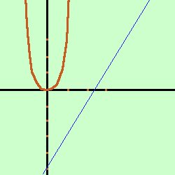
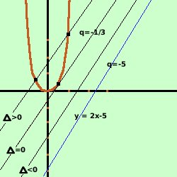

|
Considerate le rette parallele alla retta y = 2x - 5 determinare le condizioni per cui le intersezioni di tali rette con la parabola y = 3x2 siano rappresentate con valori reali e distinti  Soluzione: Prima disegniamo la parabola e la retta date Osservando la figura vediamo che tracciando delle parallele alla retta data queste sono prima esterne, poi toccano la parabola e successivamkente hanno due punti di intersezione con la parabola; quindi
bastera' considerare il fascio di rette parallele, farne il sistema con l'equazione della partabola e poi porre il delta dell'equazione risolvente uguale a zero per ottenere due soluzioni reali coincidenti il fascio di rette parallelo alla retta data y = 2x - 5 sara' y = 2x + q infatti al variare di q la retta si sposta parallelamente a se' stessa Faccio il sistema y= 3x2 Sostituisco il valore della y dalla seconda equazione nella prima ed ottengo l'equazione risolvente 3x2 = 2x + q 3x2 - 2x -q = 0 Per avere due soluzioni coincidenti devo porre il delta dell'equazione uguale a zero Ho a = 3 b = -2 c = -q 4 + 12q = 0 12q = -4 q = -4/12 q = -1/3  quindi la retta tangente sara' y = 2x - 1/3 Adesso se osserviamo la retta di partenza abbiamo che il termine noto vale -5, mentre nella retta tangente abbiamo che vale -1/3, quindi spostando la retta parallelamente a se' stessa verso sinistra il termine noto aumenta: cioe' possiamo dire che:
Ricorda anche che il termine noto nell'equazione della retta corrisponde al valore dell'intersezione della retta con l'asse delle y |